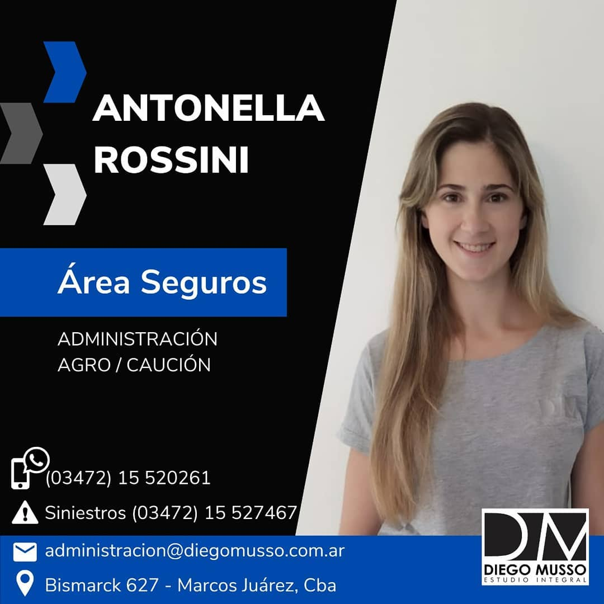
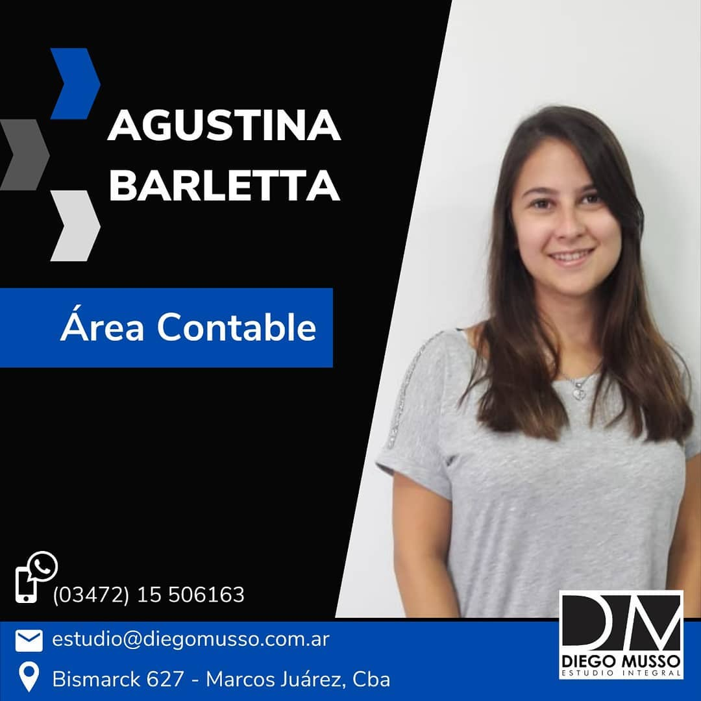
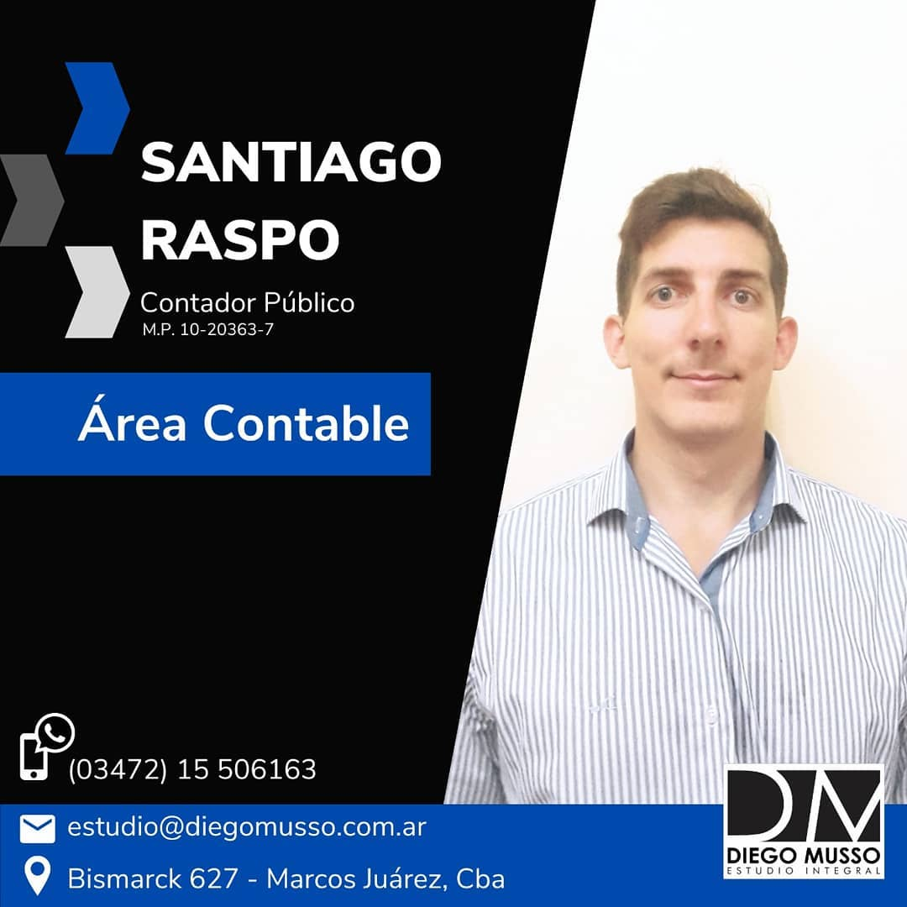
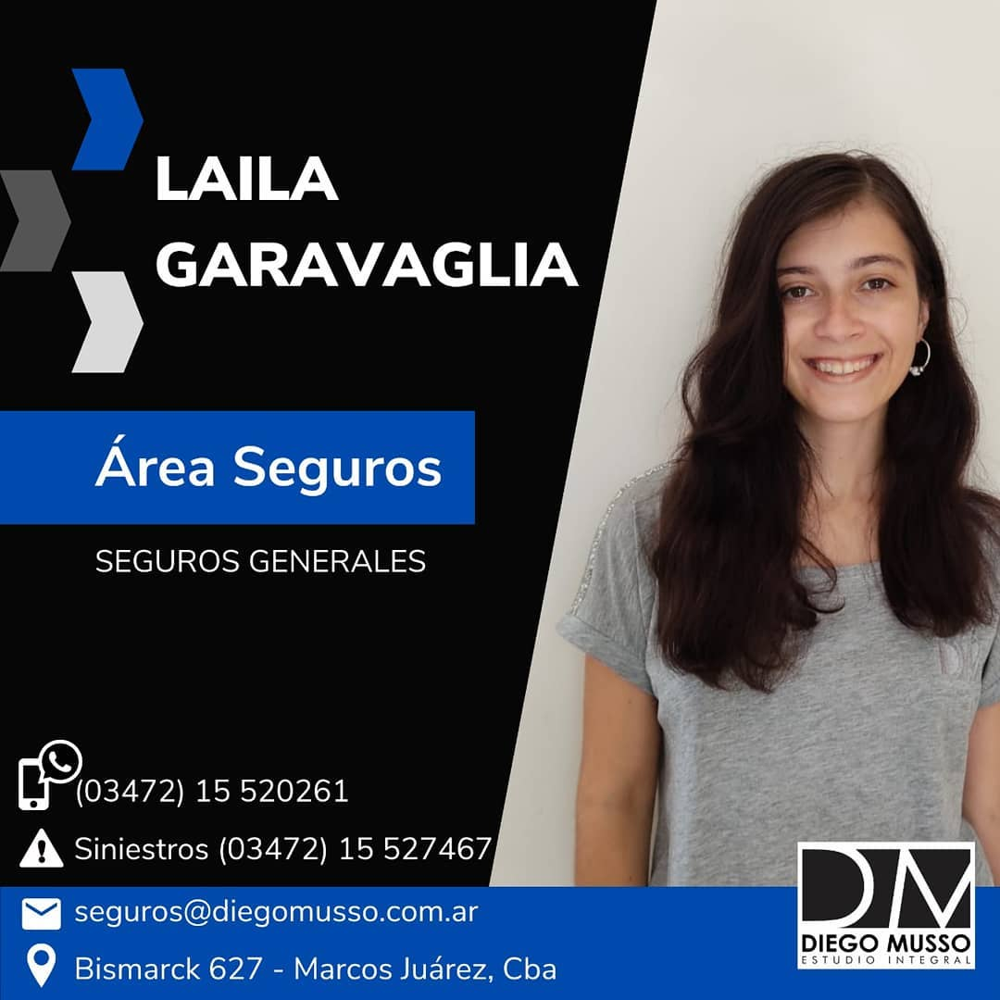

¿QUIENES SOMOS?
Nuestro estudio se encuentra en la ciudad de Marcos Juárez, al sudeste de la
provincia de Córdoba.
El líder de este hermoso grupo, como lo indica el nombre, es Diego Leonel Musso, Productor de
seguros y Contador Público.
En lo que respecta a los seguros nos desempeñamos desde el año 2011 asegurando bienes y personas, a
lo largo y ancho del país. Focalizamos nuestro trabajo en el área laboral pero poco a poco fuimos
ampliando la gama de productos.
Una fortaleza de nuestro servicio es el vínculo que construimos con varias organizaciones y
compañías, permitiéndonos ofrecer una variedad de opciones a nuestros clientes.
El espacio contable era desarrollado por Diego de manera particular hasta que en el 2020 se tomó la
decisión de unificar para brindarle un servicio único y eficaz a aquellas personas que confían en
nosotros.
Nuestra motivación es superarnos día a día y brindar lo mejor, afianzando de esa forma la relación
que construimos con nuestros clientes.
¡Nos presentamos!
Pasá el mouse por cada una de nuestras fotos para conocernos un poco más.
Te presentamos a Diego Musso, el líder de este hermoso grupo. Es contador público y productor asesor de seguros.
Lo definimos como una persona optimista, proactiva y práctica. Cualquier problema te lo resuelve en 2 seg 👏.
Siempre está dispuesto a enseñarnos lo que no sabemos, darnos una mano en lo que necesitemos, e impulsarnos a crecer.
Cuando no está trabajando le gusta practicar aeromodelismo, kayakismo, deportes en general. 🚣⚽🏀
➡️ Dato random: es piloto de parapente.

Ella es Antonella Rossini, o Anto, como le decimos en la oficina.
Realiza sus tareas en la parte de administración y además es la especialista del equipo en lo que respecta a seguros de Agro y Caución.
Anto es de Bell Ville pero hace unos años eligió a Marcos Juárez como su hogar 🏡.
Algunos adjetivos que la definen: responsable, detallista y simpática. Le encanta diseñar y que todo esté hiper organizado.
➡️ Dato Random: es adicta al chocolate 🍫.

Es el turno de Agustina Barletta, alias Agus. Tiene 22 años y es estudiante avanzada de la carrera de Contador Público.
Es multifacética, si bien ahora es parte del área contable, estuvo muchos años llevando a cabo las gestiones del área seguros.
Agus es creativa, positiva y sincera. Fuera del trabajo le gusta tejer y hacer manualidades.
➡️ Dato Random: es fan de dormir la siesta 😴

Él es Santiago Raspo, es contador público y es el más nuevo en el grupo.
Desarrollará sus tareas en el área contable, ayudándote con cualquier consulta o duda que tengas.
Si tendríamos que definir a Santi en tres palabras diríamos que es responsable, sociable y que
tiene alma de líder.
¿Qué le gusta hacer en su tiempo libre? Practicar deportes, tocar la guitarra y escuchar música ♫
➡️ Dato Random: intento de jugador de básquet del club San Martín de la ciudad de Marcos Juárez⛹.

Ella es Laila Garavaglia, tiene 24 años y se desenvuelve en el área de los seguros.
Afirma que encontró en @diegomusso_estudiointegral un lugar excelente para crecer y evolucionar.
Laila es una persona carismática y comprometida con lo que hace. En su tiempo libre disfruta
compartiendo momentos con amigos y familia.
➡️ Datos random: pocas veces la verás sin tacos 👠 - Toma mates 24/7